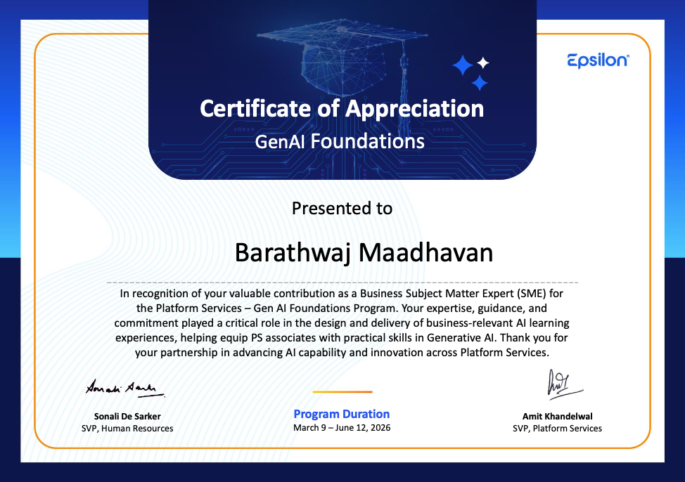

Barathwaj Maadhavan
AI Engineer · GenAI · Forward Deployed Engineer
GenAI Enterprise Upskilling Initiative
Comprehensive AI training program for 600+ employees – from foundational concepts to autonomous pipeline development.
Overview
As the Subject Matter Expert (SME) for an internal GenAI upskilling initiative, I designed and led a comprehensive curriculum aimed at training over 600 employees on foundational and advanced artificial intelligence technologies. I structured the program into two distinct phases to balance conceptual depth with technical competency.

The Challenge
The organisation needed to rapidly upskill its workforce to adopt AI-driven development practices. However, the engineering teams had varying levels of AI knowledge, and there was no standardised curriculum. The challenge was to design a program that was both accessible to beginners and rigorous enough for advanced practitioners.
Program Structure
Theoretical Phase
I curated a robust learning syllabus composed of high-quality external resources, including vetted Udemy courses, technical documentation, and video content, to establish a baseline understanding of trending AI technologies and orchestration tools like n8n.
Practical & Assessment Phase
I designed a two-tiered lab approach:
- Guided Labs – Interactive practice modules where participants gained hands-on experience in prompt engineering, Large Language Models (LLMs), Retrieval-Augmented Generation (RAG), and AI-driven SQL generation.
- Autonomous Assessment – A rigorous capstone challenge where participants were tasked with architecting an end-to-end n8n pipeline from scratch, which required them to manage the entire backend infrastructure, including S3 integration and input data management, with no external guidance.
Trainer Evaluation & Oversight
Beyond content creation, I was responsible for evaluating external trainers to ensure the delivery of the webinar series aligned with our technical standards and the depth required by the syllabus.
Results & Impact
- 600+ employees trained across foundational and advanced AI topics.
- 40% increase in AI project adoption across teams.
- Established a company-wide AI competency framework.
- Bridged the gap between theoretical knowledge and real-world application – directly facilitating the adoption of AI-driven development practices across the organisation.
Key Learnings
Leading this initiative reinforced the importance of balancing theoretical depth with practical application. The two-tiered lab approach was particularly effective – participants engaged more deeply when they could immediately apply what they learned in hands-on exercises. I also learned that evaluating external trainers against a clear technical standard ensures consistent quality and alignment with the curriculum's goals.